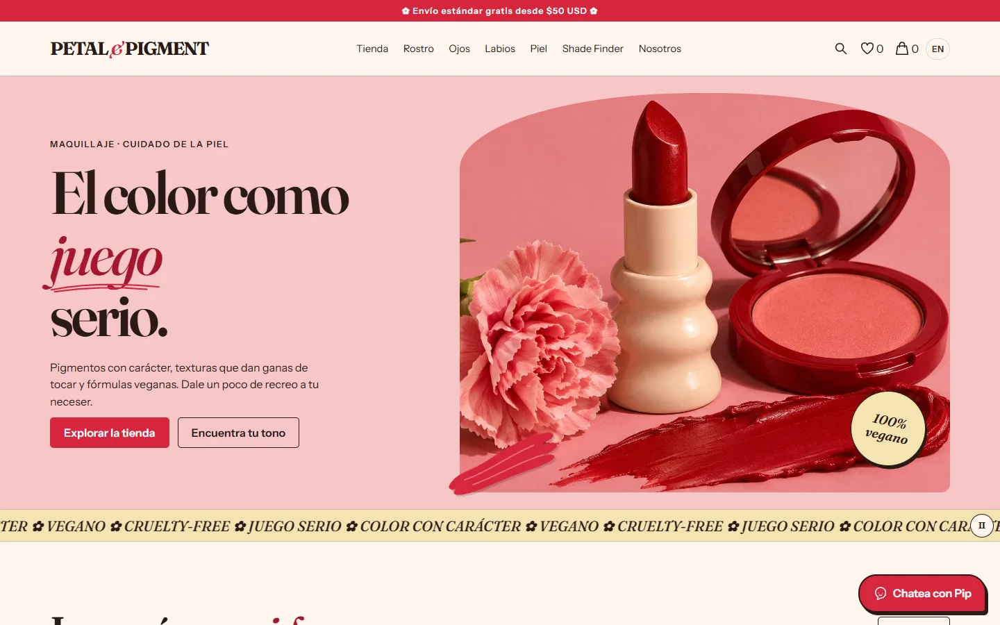
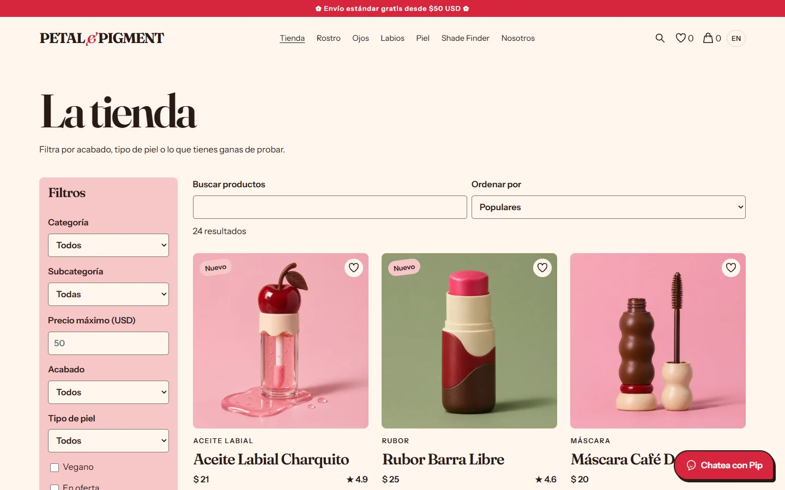
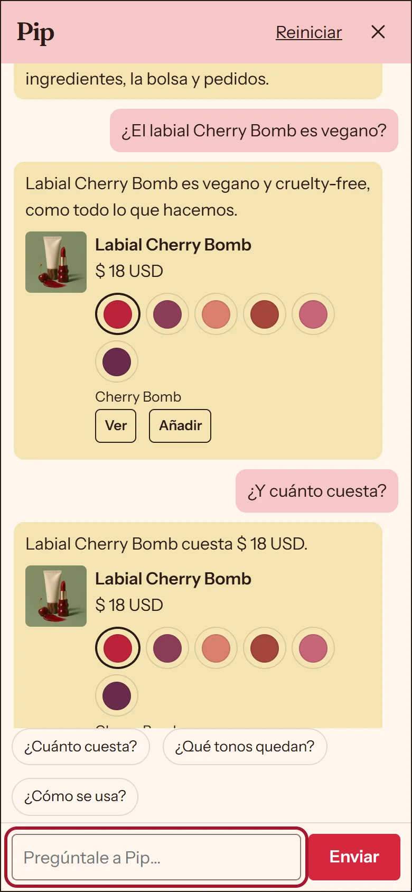

Belleza · E-commerce
PETAL & PIGMENT

Proyecto de referencia / concepto: marca, datos y pagos son de demostración.
El reto
Ayudar a quien compra maquillaje y cuidado de la piel a elegir un tono, armar una rutina y consultar disponibilidad.
La solución
La paleta de crema, cacao, cereza, pétalo y mantequilla enmarca el catálogo. Shade Finder y Pip incorporan asesoría durante la compra.
- Crema
#FFF6EE - Cacao
#2A1A17 - Cereza
#D7263D - Pétalo
#F7C6C7 - Mantequilla
#F4E3B1
Tipografías · Fraunces + Instrument Sans
Funcionalidades
- 24 productos con tonos y stock por tono, tienda con filtros y fichas con reseñas.
- Shade Finder con cuestionario y coincidencia de tono por foto procesada en el navegador. Herramienta «Arma tu rutina».
- Bolsa con códigos de descuento y muestras, checkout y seguimiento de pedido.
- Pip entiende lenguaje natural en ES/EN y usa datos reales de la tienda para consultar stock por tono, precios, ingredientes y pedidos, recomendar, comparar y añadir a la bolsa.
- Tienda bilingüe ES/EN.
Galería
Capturas del proyecto


Siguiente proyecto
ASTRO